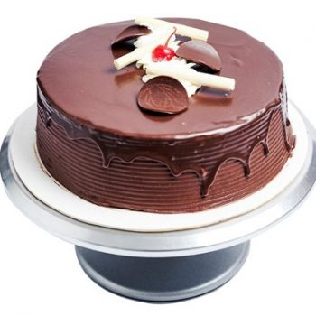
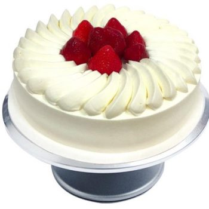

Maximiliano Vargas y Torres


Maximiliano Vargas y Torres
Prof. Azucena Cervantes Ponce
Practica 10% parte 2
04/05/2023
6B
 Youtube
Youtube  Twitter
Twitter 
Los Chatos
Se distingue por su calidez de servicio y la calidad de sus productos, los cuales se elaboran con ingredientes 100% naturales, y con recetas que han perdurado por generaciones y dan como resultado años de éxito continuo. Es una empresa socialmente responsable y todos sus productos (pasteles, helados, café, panadería) se preparan utilizando insumos saludables y una cuidadosa selección de todos los ingredientes.  Es Irlanda en Vallarta. Pan de mantequilla relleno de licor de crema irlandesa. Cubierto con licor de crema irlandesa, decorado con granillo de chocolate y con 3 chocolates rellenos de baileys |
 ¡El pastel del amor! Mitad pan de chocolate blanco bañado con jarabe natural rojo y mitad pastel de queso, relleno con betún de queso philadelphia. Cubierto de queso philadelphia y moronas de pan de chocolate blanco con jarabe natural rojo, decorado con cunas de chocolate blanco y cerezas. |
 Elaborado 100% de chocolate, no contiene ningún saborizante. Su aroma te encantará, desde que abres la caja, quedarás enamorado de este pastel. Pan de chocolate y cocoa, humedecido con jarabe natural y relleno de betún de chocolate. |
 Pan de mantequilla bañado con jarabe natural, relleno de fresa natural picada y crema de fresa.Cubierto con crema natural y decorado con fresas enteras. |
- 280 g harina de trigo.
- 40 g cocoa en polvo.
- 5 g sal.
- 110 g mantequilla.
- 250 g azúcar.
- 2 piezas de huevo.
- 15 ml esencia de vainilla.
- 225 ml leche.
- 6 gotas de colorante rojo